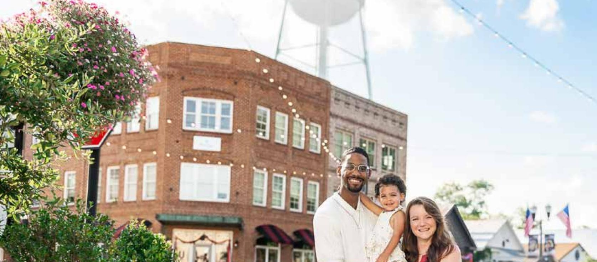
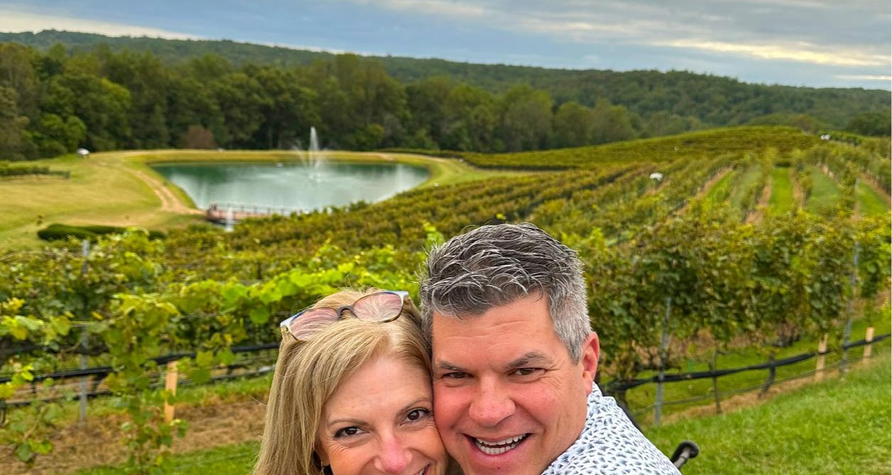
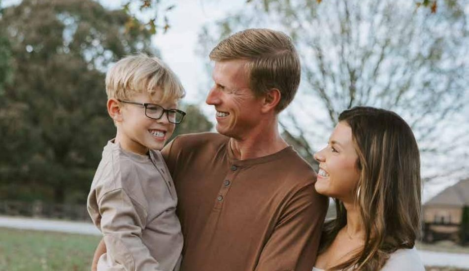
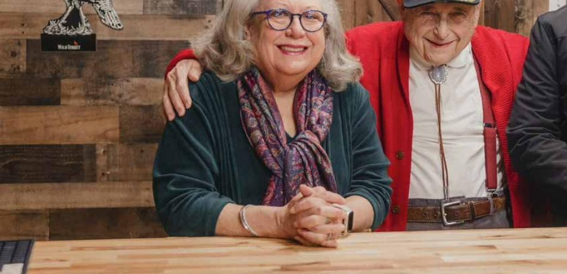
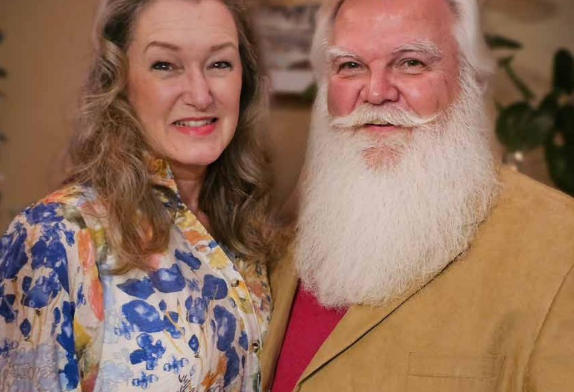
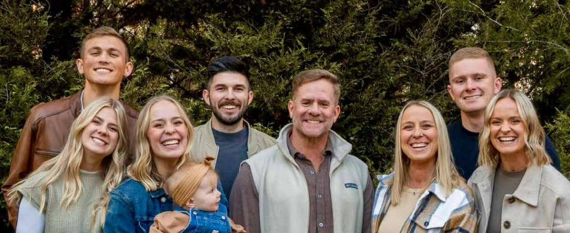

Every issue, we sit down on someone's porch and listen. These are the families, kids, and companions who've let us in.

How the Brewington family is building community by helping people feel at home
Spend just a few minutes with Darrin, Ashley, and their nearly two-year-old daughter Nayeli, and something becomes immediately apparent: their warmth is simply contagious. Darrin is planting Abide Church in Senoia, launching this August — not to start another church, but to create a place where people feel seen before perfection.
"Community often begins with something as simple as making room for one more chair at the table."

How the Bartels family embraced Senoia, strengthened their foundation, and keep moving forward together
When Kevin and Kari made the move from Texas four years ago, Senoia didn't take long to feel like home. What once helped restore their own marriage — a program called Re|Engage — is becoming something they now offer other couples through ONE Church in Fayetteville.
"You do not have to be born here to belong here."

The Jenkins family shows up in big ways — for each other, their son, and this community
Stephen and Katelyn Jenkins moved to Senoia in 2018 from Thomaston, and they haven't just lived here — they've leaned in. Since welcoming their son Grayson, "all in" has taken on even deeper meaning, with leadership that Stephen says starts at home first.

In memory of Ellis Crook, who spent 95 years calling Senoia home
When the Crook family opened their grocery in 1913, it became more than a store — it was where neighbors gathered and found community. Ellis carried that quiet steadiness his whole life. "Dad didn't just talk about values," his daughter Cheryl remembers. "He lived them. Every single day." Mr. Ellis passed away on June 22, 2026; our history column is now named Crook's Corner in his honor.

Joe and Dawn McGee, and the calling behind the red suit
Married 40 years, Joe and Dawn McGee are "Ahdah and Nana" to four grandchildren. After his brother David — the original Santa in the family — passed in 2010, and after his own cancer diagnosis in 2012, Joe felt called to pick up where David left off. Through the Santa David Children's Fund, they've since given nearly $600,000 to children and families in need.
"I saw a little bald girl in the lobby. I knew right then why the Lord sent me there."

29 years married. 4 daughters. 3 granddaughters. 1 joyful mission.
Blake Bergstrom, now Lead Pastor at ONE Church, moved his family to Senoia in 2019 after "years turning down invitations" to interview here. Since then, ONE Church has grown from 200 to over 2,000 in attendance. As Blake puts it: "the amount of joy is illegal."
Ranked No. 3 in the nation in Woods Dirt Bike Racing's Micro-E division. Known as the "Hole Shot King."
A School Ambassador chosen through competitive selection, and self-appointed "Creative Director" of her church's two-year-old Sunday school class.
Runs a six-machine cotton candy business across four counties, makes her own sugars from scratch, and still finds time for guitar, bass, and vocals.
A junior at KONOS Academy quietly building a growing list of achievements through talent, discipline, and encouragement.
A straight-A student who turns his grandmother's parking spot into a fundraiser for i58 Mission at every Senoia Car Show.
In-Game Leader of esports team EXO, competing nationally in XP League's competitive Fortnite circuit.
A rescued senior dog who endured 20 days of neglect before finding the Novak family — now an elite-level snuggler.
Boxer brothers with 100,000+ followers across social media as "Southern_Boxer_World" — Senoia's furry local celebrities.
An 8-year-old mini horse with a mane dramatic enough to earn a reputation as a real-life unicorn.
The Adams family's cat and beagle — Roxy answers to "Boo Boo Kitty," Remi never turns down a game of fetch.
Self-appointed squirrel-population-control specialist and full-time sister chaperone for the Hall household.
No Pet of the Month ran this issue — nominate one for Issue 07?
Nominate →